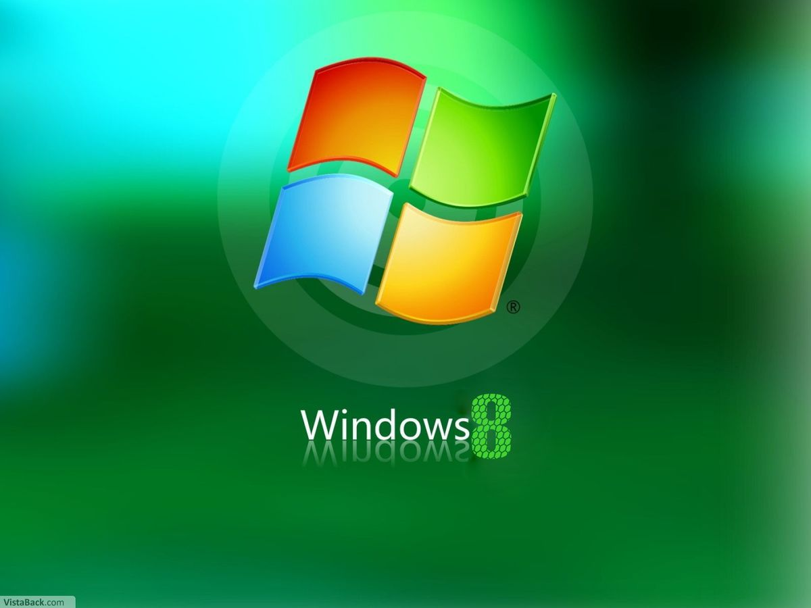
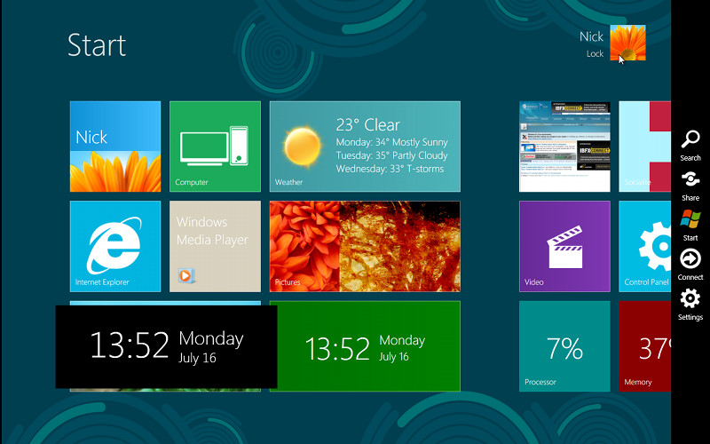

Released: 2012
Windows 8 represented a major shift in Microsoft's design approach. Unlike previous versions that focused primarily on desktop computers, Windows 8 was designed to work across tablets, touchscreens, and traditional PCs.
This change resulted in a new visual style and interaction model that was significantly different from earlier versions of Windows.
About

- Tile–based Start Screen
- Touch–friendly interface
- Flat visual design
- Emphasis on typography and spacing
- Full-screen apps
The traditional start menu was replaced with a grid of live tiles designed to display real-time information
Key Features
Windows 8 followed a content–first approach. Decorative elements were minimized so that information stood out clearly. Large text, strong alignment, and simple shapes were used to improve readability, especially on touch devices.
The design was influenced by modern graphic design principles such as minimalism and grid systems.
Design Philosophy
While Windows 8 was praised for its modern look, many users found the changes difficult to adjust to, particularly on non–touch devices. Despite this, the design ideas introduced in Windows 8 influenced later versions of Windows.
Impact
